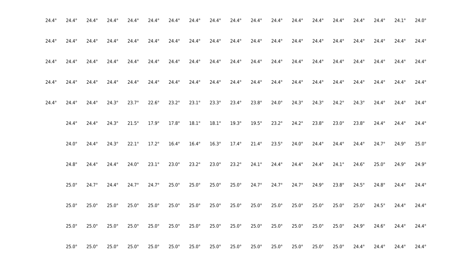

MS RFC 139: Raster labeling (CONNECTIONTYPE RASTERLABEL)¶
- Date:
2024/08/14
- Author:
Even Rouault
- Contact:
even.rouault at spatialys.com
- Status:
Adopted
- Version:
MapServer 8.4
1. Overview¶
This is a proposal to add the ability to render labels from raster pixel values, as an alternative or complement to other typical raster rendering (grayscale, classification, etc.). Typical applications are for temperature, wind, humidity, slopes, altitude, noise, pollution, etc.
Visual example (rendered with MapServer):

2. The proposed solution¶
This RFC proposes the addition of a new type of layer in MapServer: CONNECTIONTYPE RASTERLABEL. The code is strongly based on the UVRASTER capabilities, but will be kept separate as some likely potential evolutions of UVRASTER (such as modifying u,v values during reprojection operations) will make both implementation diverge.
The new type is a hybrid layer, which has a raster data source as input and vector features as output. Only the point representation of those vector features will be supported. Values at nodata will be ignored.
Since the data source is a raster, all raster processing options can be used (e.g. RESAMPLE). A default value of RESAMPLE=AVERAGE will be used, if it is not explicitly defined.
To render a vector field layer, we need to define a layer in the mapfile with the following options:
Set the layer TYPE to POINT.
Set CONNECTIONTYPE to RASTERLABEL.
Set the DATA to the raster file.
If the raster file has more than one bands, add a PROCESSING “BANDS=<num>” option
Specify a CLASS with a LABEL object to label the points, using the [value] attribute binding.
Optional “PROCESSING” settings:
BANDS=<num>: Specify the band to label. Not needed if there is a single band.
LABEL_SPACING=<num>: The spacing is simply the distance, in pixels, between points to be displayed in the vector field. Default is 32.
RESAMPLE=NEAREST/AVERAGE/BILINEAR: Defaults to AVERAGE.
ALLOW_OVERSAMPLE=YES/NO: Whether it is allowed to oversample the raster at a resolution higher than its nominal resolution. Default is NO, meaning that when zooming in beyond the nominal resolution of the raster, at most one point will be generated for each source pixel. This gives to the user a sense of the resolution of the data it displays.
The UVRASTER layer has one attribute bindings that can be used in the layer definition and/or class expressions:
[value]: the raw raster value
Example of a layer definition:
LAYER
NAME "temperature"
TYPE POINT
CONNECTIONTYPE RASTERLABEL
PROJECTION
"init=epsg:4326"
END
DATA data/temperature.tif
# PROCESSING "BANDS=1"
# PROCESSING "LABEL_SPACING=32"
# PROCESSING "RESAMPLE=AVERAGE"
# PROCESSING "ALLOW_OVERSAMPLE=NO"
CLASS
TEXT (tostring([value],"%.1f")+"°")
LABEL
TYPE TRUETYPE
SIZE 7
END # label
END # class
END
3. Implementation Details¶
Internally, a RASTERLABEL layer will have its own renderer/driver code. It’s a hybrid layer because it reads the raster source as a normal raster layer does, but all other functions behave like a vector layer. The layer can be drawn as a normal point layer using whichShape, GetShape etc.
Basic internal draw process of a RASTERLABEL layer:
whichShape() is called: the raster data source is read using the internal GDAL functions, resample and all other raster options are applied and the pixels result is stored in the internal layer structure.
getShape() is called: loop through the raster pixels and returns a shapeObj (Point) created with the pixel location.
MapServer draws its point feature as any other vector layer.
3.1 Files affected¶
The following files will be modified/created by this RFC:
mapserver.h/mapfile.c (Connection type RASTERLABEL support in the mapfile)
maprasterlabel.cpp (new file for the RASTERLABEL renderer)
mapuvraster.cpp (renamed from mapuvraster.c, not strictly correlated with this development, but was the opportunity to make an optimization to make getShape() faster when requesting increasing feature index, that is also used by maprasterlabel.cpp)
maplayer.c (new layer type handling, virtual tables init etc.)
maplexer.l (add additional RASTERLABEL keyword)
3.2 MapScript¶
No issue for any MapScript bindings. The RASTERLABEL layer is handled/rendered internally as any other layer..
3.4 Backwards Compatibility Issues¶
This change provides a new functionality with no backwards compatibility issues being considered.
4. Candidate implementation¶
5. Voting history¶
+1 from PSC members EvenR, TomK, JukkaR, SethG, MikeS, DanielM, JeromeB, SteveL, JeffM